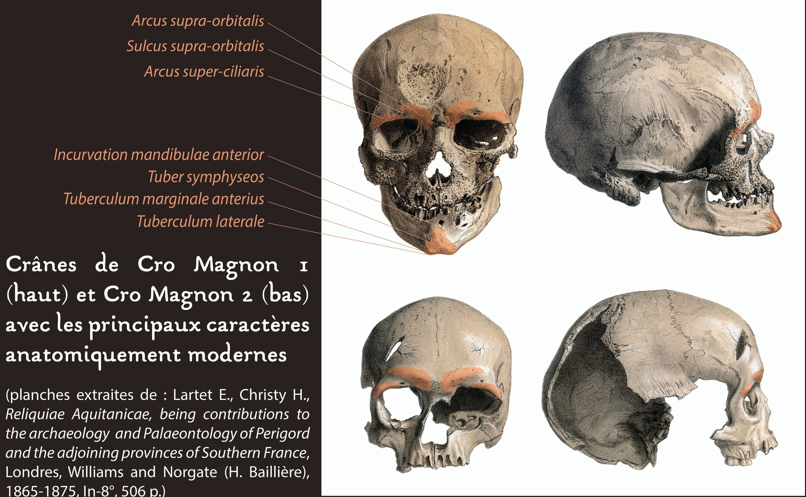
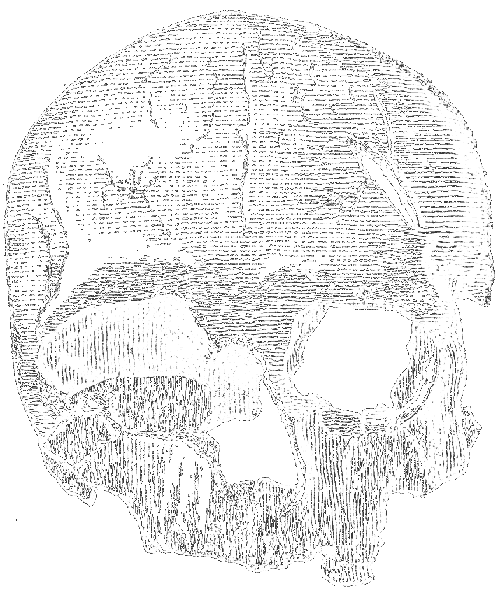
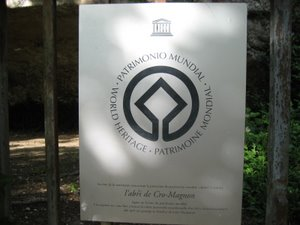

Collection Grand sites archéologiques
l'Abri Cro-Magnon
1868 - Découverte de l'Homme de Cro-Magnon
L'Homme de Cro-Magnon est à l'origine le nom donné à un ensemble de restes fossiles d'Homo sapiens découverts en 1868 par Louis Lartet sur le site de l'abri de Cro-Magnon, lieu auquel il doit son nom (cros voulant dire « creux » en occitan).
A la découverte du site de l'abri de Cro-Magnon
La découverte des fossiles de Cro-Magnon est fortuite, à une époque de fort engouement pour la Préhistoire dans la région des Eyzies-de-Tayac (Dordogne): son retentissement est immédiat et considérable.

Pour Louis Lartet, l'ampleur du talus masquant l'abri et l'association des vestiges humains avec une faune quaternaire prouvent l'ancienneté de la sépulture. Cependant, de nombreuses incertitudes subsistent à cause de l'ancienneté de la fouille et du caractère fortuit de la découverte. L'intervention de Louis Lartet était limitée (extension et durée) et consacrée à la partie inférieure du remplissage. Par la suite, l'abri fut totalement vidé de son contenu.
Une date, obtenue sur l'un des coquillages composant la parrure funéraire d'un des squelettes retrouvé dans l'abri, leur donne un âge compris entre -32 000 et 31 000 ans.
Bien qu'aucune fosse ni aménagement funéraire n'aient été observés, qu'aucune information n'ait pu être récoltée sur la position des corps, la coupe et le plan succinct de répartition des ossements permettent de déduire un regroupement des défunts dans un espace réduit, en partie supérieure du remplissage, en fond d'abri et très près de la voûte. Cette localisation ne peut être imputée à un phénomène naturel.

Le dépôt est bien intentionnel et la présence d'ossements de petites tailles plaide en faveur d'un dépôt primaire.
C'est la première fois que l'Homme moderne est ainsi identifié par des restes fossiles.

Ossements et sépulture
L'abri de Cro-Magnon a livré plus de 200 ossements humains. Ne connaissant pas leur position initiale, il est très difficile de les regrouper par individus.
Des travaux, s'appuyant sur la reconstitution virtuelle, sont en cours. Un minimum de quatre adultes est déduit du nombre des fragments crâniens. Des restes très fragmentaires suggèrent la présence d'au moins trois nouveaux-nés et un nourisson plus âgé.
Les crânes les plus complets appartiennent à deux adultes, l'un probablement masculin (surnommé "le vieillard") et un autre plus gracile, peut-être féminin.
Tous deux sont relativement âgés, l'absence des dents ne permettant pas d'être plus précis. L'étude des membres inférieurs, récemment réassociés entre eux, met en évidence des sujets assez grands (1,70 à 1,77 m pour les hommes, environ 1,65 m pour la femme) et très robustes. En revanche, il n'est pas possible d'établir de lien de parenté entr eux, car il n'y a plus de collagène pour les analyses ADN.
La sépulture de Cro-Magnon est donc plurielle, mais il n'est pas possible de déterminer si les défunts ont tous été déposés en même temps. La présense de concrétions sur les ossements du "vieillard" laisse penser qu'au moins cet individu n'a pas été à proprement parler enterré (c'est-à-dire, recouvert de sédiment).
Le fait de laisser les cadavres à l'air libre semble être une spécificité du Sud-Ouest de la France pour la Gravettien.
Le site a aujourd'hui l'air bien vide. L'abri ayant été excavé et son matériel éparpillé, son importance archéologique mondiale sera reconnue plus tardivement.
Il est classé au titre des monuments historiques le 9 janvier 1957. Depuis 1979, il est inscrit au Patrimoine mondial de l'Unesco, en association avec d'autres sites et grottes ornées de la région sous le nom de « sites préhistoriques et grottes ornées de la vallée de la Vézère ».
Les acteurs de la découverte du site
Comme mentionné sur la plaque commémorative fixée sur le talus de l'abri de Cro-Magnon, le site a été découvert en 1868 par François Berthoumeyrou.
C'est à l'occasion de travaux de voirie que l'entrepreneur F. Berthoumeyrou, accompagné de son demi-frère L. Delmarès, décide de prélever des sédiments sur ce talus rocheux.
La découverte d'ossements humains permettent l'ouverture de fouilles archéologiques par Louis Lartet, archéologue fils d'Edourd Lartet.